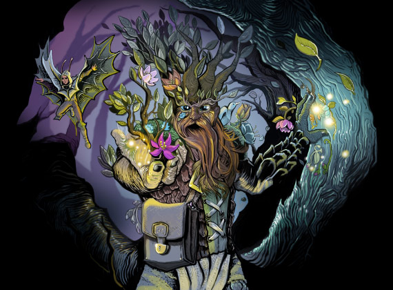
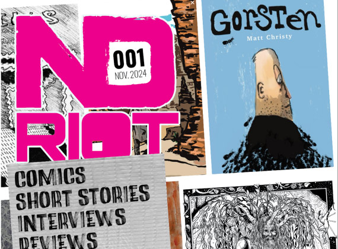
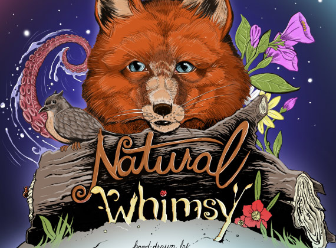
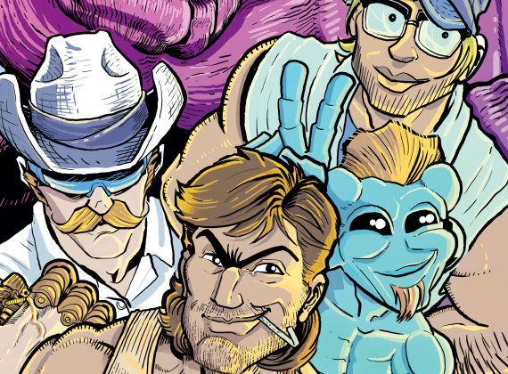
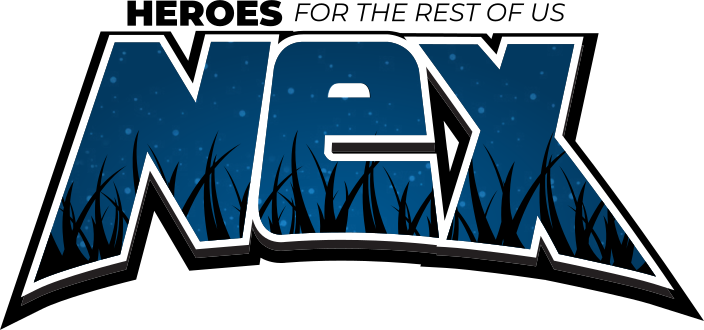

Featured Projects

A young girl – armed with a talking shield and flaming sword – is thrust into a dangerous adventure that threatens to upend every rule and ruler she's ever known.

Short-form comics, short stories, and other creative work by unique storytellers. Published quarterly, ND Riot works to support independent artists, writers - unique storytellers of all sorts.

Natural Whimsy is a hand-drawn coloring book featuring one-of-a-kind illustrations of everything from pugs to dolphins, to baby pigs (some might say piglets).


Four life-long friends are abducted by aliens and accidentally injected with a serum designed for Martian super-soldiers. Stupidity ensues. Issues 1 and 2 available at the link.